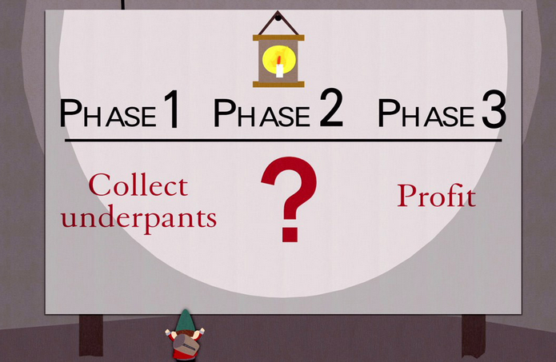

Eric Weinstein is the Tenacious D of high energy physics
29 Oct 2023
Who is Eric Weinstein?
Eric is a podcaster who has most notably made appearances on the Joe Rogan experience (JRE). He received a PhD in mathematical physics from Harvard in 1992, and between 2013 and 2022 he was a managing director of Thiel Capital - Peter Thiel’s investment firm.
Eric came to some public prominence after his brother Bret Weinstein was involved in an incident at Evergeen State college. The college had a decades-old tradition called ‘Day of absence’, where ethnic minorities students would not attend campus to highlight their contributions. In 2017, a twist on this was put forward where white people would instead stay off campus for the day. Bret was a professor at the college at the time and refused to participate, circulating an email detailing his reasons. A group of students marched on one of his lectures in protest, angrily demanding he leave campus. The protestors later met with Evergreen staff and subjected them to what I can best describe as a struggle session. The whole incident was quite extraordinary, and I recommend watching raw footage, for example here and here.
After the incident, Bret was invited to discuss his experiences on JRE, and went on to host a podcast himself. Eric managed to get a slot on JRE following his brother’s successful appearances. He subsequently coined the term ‘Intellectual dark web’, to refer to a group of iconoclastic thinkers and commentators, including such figures as Joe Rogan, Jordan Peterson, Sam harris and of course himself.
Who are Tenacious D?
A comedy rock band consisting of Jack Black and Kyle Gass. You may remember them from their timeless classic Tribute, which tells a tale of their encounter with a daemon who demands that they play the ‘best song in the world’. As the now immortal lyrics go, they played the first thing that came to their heads, which just so happened be the best song in the world. However, they aren’t able to remember or reproduce the song after the fact, so we have to rely on their word that it was, in fact, the best song in the world.
What do Eric Weinstein and Tenacious D have in common?
Eric fancies himself as an unrecognised mathematical genius who holds the key to the elusive theory of everything - the holy grail of theoretical physics that many brilliant but lesser minds have been struggling to find for decades. He calls his theory ‘Geometric unity’. If you sign up to his mailing list here, you can read a draft of this once in a lifetime work of brilliance.
Alternately, if you, like me, are puzzled by the idea of having to sign up to a mailing list to read a theoretical physics paper, you can find a draft that was released in 2021 here. You can also find a lecture he gave at Oxford in 2013 on his theory here.
Spoiler alert: I would not recommend grinding through either of these, even if you have the requisite physics background. The high level summary is that Eric has definitely solved every major outstanding problem in high energy physics, but he just can’t quite remember most or all of the details.
It is definitely the best theory in the world though.
I'm confused by how that could happen
You and me both.
Eric claims to have figured out the major detail of the theory back in 1983-1984, when he would have been just 18-19 years old and in the middle of a combined Bachelor’s/Master’s degree. If you weren’t already suspicious, this should definitely set your bullshit detector screaming. Modern high energy physics is ming-bogglingly complex, to the extent that even world recognised geniuses only started to make serious contributions at earliest in their mid to late twenties. The vast majority of 18 years olds doing physics degrees haven’t even begun to acquire an understanding of general relativity or the standard model, both extremely complex subjects in their own right that demand mastery as a minimal price of entry before you might even begin making modest contributions towards a ‘theory of everything’.
But Weinstein, a man who admits to not having any spectcalar technical ability, as an 18 year old back in the 1980s, managed not only to make a contribution, but to blow the whole thing sky high? And has kept the lid on this stunning development for several decades, for, um, reasons?
Right.
Eric claims to have pieced together his theory of everything from various documents he produced in that period. From his draft:
As such this document is an attempt to begin recovering a rather more complete theory which is at this point only partially remembered and stiched(sic) together from old computer files, notebooks, recordings and the like dating back as far as 1983-4 when the author began the present line of investigation. This is the first time the author has attempted to assemble the major components of the story and has discovered in the process how much variation there has been across matters of notation, convention, and methodology.
Well, if that doesn’t fill you with confidence, I don’t know what will.
Eric also wants you to know that he has very carefully taken into consideration the immediate objection you might have; that in his own words he has been ‘working in near total isolation from the community for over 25 years, does not know the current state of the literature, and has few, if any, colleagues to regularly consult.’ On this, he has the following to say
Every effort has been made to standardize notation but what you are reading is stitched together from entirely heterogeneous sources and inaccuracies and discrepancies are regularly encountered as well as missing components when old work is located. The author notes many academicians find this unprofessional and therefore irritating. This is quite literally unprofessional as the author is not employed within the profession and has not worked professionally on such material since the fall of 1994. If you find this disagreeable, please feel free to take your professional assumptions elsewhere. This document comes from a context totally different from the world of grants, citations, research metrics, lectures, awards and positions. In fact, the author claims that if there is any merit to be found here, it is unlikely that it could be worked out in such a context due to the author’s direct experience of the political economy of modern academic research. This work stands apart from that context and does so proudly, intentionally, and without apology.
Well, seems legit to me. If Eric’s work contains errors or just plain doesn’t make sense, the theory is not to blame; rather it’s all just part and parcel of him being a rogue that operates outside of the traditional, stifling environment of academia. If you really think about it, that’s actually a strength.
Ok let’s delve into the abyss of his ideas.
Not even wrong
I have watched Eric’s 2013 lecture at Oxford. I found it completely incoherent, obscure and lacking in crucial detail. Eric himself admits that he made errors in presentation that may have rendered the talk largely unintelligible. An appropriately trained physicist cannot, for example, sit down with pen and paper and check the maths. You can’t even extract much qualitative detail about the theory. It’s just a vague mess of poorly-presented, half-baked ideas.
So I was very excited when, in 2021, after almost a decade of prevaricating, Eric announced that he was releasing his paper properly detailing the theory. I wanted to see some actual maths.
I confess, however, that I haven’t made it through the document. It’s the sort of thing you could spend a very long time reading and be none the wiser at the end. It’s still vague, it’s still incoherent, and it’s still the sort of thing that does not remotely show enough promise to spend whatever stupid amount of time it would take to get through it and still not understand at the end because, as it turns out, it’s all nonsense.
What I do understand is that he wishes to consider a gauge theory defined on a 14-dimensional manifold (his so-called ‘Observerse’) consisting of the four known spacetime dimensions, together with a bundle of symmetric \( 4 \times 4 \) matrices. The gauge group on this total space is \( U(128) \).
The physical motivation for doing any of this is completely unclear. But ignoring that, there are already big problems. In 1967, Sidney Coleman and Jeffrey Mandula proved the Coleman-Mandula theorem, which forbids combining internal symmetries with spacetime symmetries. There are some exceptions in the theorem, the most notable of which is supersymmetry. It’s not clear to me what Eric Weinstein’s feelings are on supersymmetry. However, his theory, to the extent that it is intelligible (it isn’t), is not formulated with supersymmetry. He offers only this cryptic line on the subject:
The author finds supersymmetry unnecessarily confusing as an as-if symmetry and is uncomfortable saying much more about it.
I don’t know what an ‘as-if’ symmetry is, but if Weinstein finds supersymmetry confusing then he is really up shit creek, since his theory needs supersymmetry if it is to have any hope at all.
Then there’s the problem that most all attempts to include the symmetries of general relativity into a gauge group have. Namely, general relativity has diffemorphism symmetry, which is much larger than the local Lorentz symmetry these theories typically try to combine with internal symmetries. Efforts like Weinstein’s don’t even try to address that issue.
The theory is constructed on a 14-dimensional spacetime manifold. Zero explanation is offered for how our four dimensional spacetime is to be recovered.
Finally, Eric also hasn’t even attempted to quantise his theory. This is a major hurdle any theory must overcome in order to be consistent with well known physics. I guess Eric hasn’t gotten round to it in the last 40 years.
The most enlightening resources I have found on Weinstein’s own work actually come from other people - in particular, critiques here given by Timothy Nguyen, who has a PhD in mathematics from MIT, was formerly a visiting assistant professor at Michigan State, and now works on machine learning at DeepMind. His paper is, in contrast to Weinstein’s, intelligible, and points out that the theory is a complete non-starter. The gauge theory it is based on leads to an anomaly, meaning there is no sensible quantisation. He also notes that
Essential technical details of GU are omitted, leaving many of the central claims unverifiable.
I, for one, am shocked.
Some more metaphors
It can be hard to fully convey how awful all of this to people outside the physics profession. I think the Tenacious D metaphor is pretty good. However, if it didn’t hit home for you, I have some others you might like.
The first is based on a South park episode in which the main characters find that an army of gnomes are stealing everyone’s underwear. When interrogated, the gnomes respond with their master plan illustrated thusly:

You can watch the sequence here; it’s very amusing. It’s also wonderfully apt as a metaphor for Weinstein’s theory, which is not so much a theory as it is a wish-list of magical things that do not exist but are required in order for his theory to work.
The other draws inspiration from the Bogdanov affair. The Bogdanovs were French twin brothers who found some success as television presenters and science popularisers. They obtained PhDs in physics from the Universiy of Burgundy around 2002. However, it soon transpired that their PhD theses were complete and utter nonsense. They contained some coherent mathematics copied from other papers, combined with what physicist John Baez described as
a mishmash of superficially plausible sentences containing the right buzzwords in approximately the right order. There is no logic or cohesion in what they write.
Nonetheless, the brothers managed to fool some very smart people, getting five papers publish in peer-reviewed journals and even getting their theses approved by Dirac medallist Roman Jackiw.
Eric Weinstein is like a live-action Bogdanov affair. He knows enough about physics to lace his speech with technically correct, jargon-laden statements designed to give the appearance of deep knowledge, while combining with poetic statements about his grand ‘theory of everything’ that are ultimately either unintelligible or unverifiable.
How can this happen?
Eric Weinstein has managed to get himself a voice on some very impressive platforms, including the Joe Rogan Experience, as well as stage time with some extremely accomplished physicists such as Roger Penrose and Brian Greene. Which is really puzzling on the face of it, given that he has achieved next to nothing in the field. How does he do it?
Eric Weinstein’s main talent in life, it seems to me, is storytelling. Just watch him action when he speaks about a subject that isn’t physics. He puts together sentences that sound unusual, clever and interesting. There is a structure that can be followed, and you feel rewarded for following it. He speaks with confidence. And yet, when you break down what he’s actually saying into simple language, it’s typically vacuous or unintelligible or silly.
He also really likes to present himself as a maverick genius. A wonderful and cringe-worthy example of this came around the 20 minute mark on episdoe 1628 of the Joe Rogan experience. They have the following exchange where a clip is pulled up of Weinstein playing guitar, which he clearly has some talent at.
Eric: "I put out a brief clip of myself playing on instagram and I got contacted by some of the best guitarists in the f-ing world. When Tosin Abasi and Joe Robinson and Ryan Roxy contact you."
Joe: "Give me some of this Jamie" (Eric's clip plays)
Joe: "That's pretty good and you are doing that without a pick"
Eric: "Yeah I didn't know you were supposed to use a pick.... apparently you are supposed to use a pick, but I didn't know! Basically I'm playing air guitar with a real guitar"
Joe: "Wow that's really good. What do you mean you didn't know you weren't supposed to play with a pick?"
Eric: "Dude I don't know what I'm doing. I don't know what I'm doing!
Joe: "How did you learn how to do this?"
Eric: "Ahhhh I hung out in a room, alone, sort of dark, and lonely"
Joe: "Really?"
Eric: "Yeah"
Joe: "When did you learn this?"
Eric: "This is part of the thing, I do a bunch of things that I don't do with other people, right? I just learn shit on my own"
Joe: "But when did you learn this? How long ago?"
Eric: "I don't even know, some of it in the last year"
Joe: "But but when did you start playing guitar? You're pretending to be coy, and I don't like it, I'm calling you out on this."
Eric: "Ok. I've had a guitar since I was 15"
Joe: "Oh, ok you have been playing forever but you are self taught."
Eric is doing everything he can here to let the listener come to the conclusion that he picked up guitar a very short time ago, and now plays like a pro - a true autodidactic genius. Except Joe knows it’s just not possible and on this occasion nails him on it.
Eric pulls similar tricks when he talks about physics with Joe, but gets away with it because Joe doesn’t know how to call him on his bullshit. Eric knows that the vast majority of the audience have no idea what he is talking about, but frequently uses esoteric technical language liberally and unnecessarily anyway. There is only one reason to do this; to craft a particular image that elevates himself above others.
High energy confidence tricks
Geometric unity has been summarily ignored by more or less the entirety of the high energy physics community. That’s because it’s a whole lot of hot air. I nonetheless can’t help but think that Eric would prefer if the theory was being attacked by mainstream physicists rather than being ignored. At least that would imply he is a threat, which is more aligned with his self-styling as a heretic and renegade. He’d rather be hated than be irrelevant.
I actually have a real soft spot for unorthodox outsiders who come out of nowhere and prove everyone wrong. A big part of me wants an Eric Weinstein style story to be true. Unfortunately the ultimate truth is that Eric Weinstein is a very sophisticated social illusionist who appears to have bought into his own bullshit. And to an extent, I get it; I don’t think there is a person who has gone into physics research without privately harbouring the small glimmer of hope that they one day might discover something incredible and be declared the next Einstein. Every one of us had a crazy idea or two at some point that we thought might just turn out to be mad genius. Then we all figured out we were really, really wrong and had to eat a sizeable portion of humble pie. Most of us learnt the lesson that needed to be learnt from that. Eric Weinstein didn’t. He doubled, then tripled down. He is a man whose real talent is projecting an image of an unheralded, iconoclastic genius to people who have no way of knowing better. Unfortunately it’s much easier to create that illusion than to be the real thing.